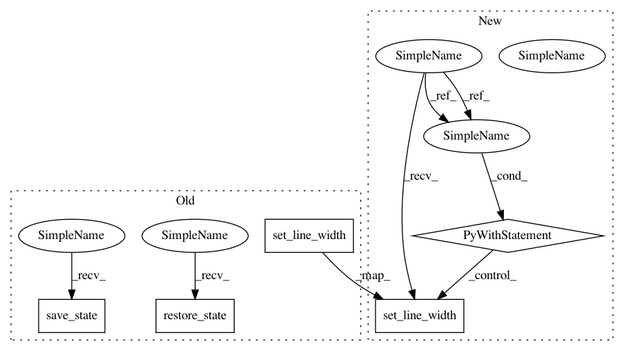

45e2042ce0bd740f2647ffa1f5244eaa3235f474,enthought/chaco/polar_line_renderer.py,PolarLineRenderer,_draw_default_grid,#PolarLineRenderer#Any#,173
Before Change
def _draw_default_grid(self,gc):
if not self.grid_visible:
return
gc.save_state()
gc.set_stroke_color(self.origin_axis_color_)
gc.set_line_width(self.origin_axis_width)
gc.set_line_dash(self.grid_style_)
x_data,y_data = transpose(self._cached_data_pts)
x_center = self.x + self.width/2.0
y_center = self.y + self.height/2.0
rad = min(self.width/2.0, self.height/2.0)
for r_part in range(5):
r = rad*r_part/4
gc.arc(x_center, y_center, r, 0, 2*pi)
gc.stroke_path()
gc.restore_state()
return
// EOF
After Change
if not self.grid_visible:
return
with gc:
gc.set_stroke_color(self.origin_axis_color_)
gc.set_line_width(self.origin_axis_width)
gc.set_line_dash(self.grid_style_)
x_data,y_data = transpose(self._cached_data_pts)
x_center = self.x + self.width/2.0
y_center = self.y + self.height/2.0
rad = min(self.width/2.0, self.height/2.0)
for r_part in range(5):
r = rad*r_part/4
gc.arc(x_center, y_center, r, 0, 2*pi)
gc.stroke_path()
return
In pattern: SUPERPATTERN
Frequency: 3
Non-data size: 5
Instances
Project Name: enthought/chaco
Commit Name: 45e2042ce0bd740f2647ffa1f5244eaa3235f474
Time: 2010-12-19
Author: warren.weckesser@651a555e-23ca-0310-84fe-ca9f7c59d2ea
File Name: enthought/chaco/polar_line_renderer.py
Class Name: PolarLineRenderer
Method Name: _draw_default_grid
Project Name: enthought/chaco
Commit Name: 45e2042ce0bd740f2647ffa1f5244eaa3235f474
Time: 2010-12-19
Author: warren.weckesser@651a555e-23ca-0310-84fe-ca9f7c59d2ea
File Name: enthought/chaco/contour_poly_plot.py
Class Name: ContourPolyPlot
Method Name: _render
Project Name: enthought/chaco
Commit Name: 45e2042ce0bd740f2647ffa1f5244eaa3235f474
Time: 2010-12-19
Author: warren.weckesser@651a555e-23ca-0310-84fe-ca9f7c59d2ea
File Name: enthought/chaco/polar_line_renderer.py
Class Name: PolarLineRenderer
Method Name: _draw_default_axes